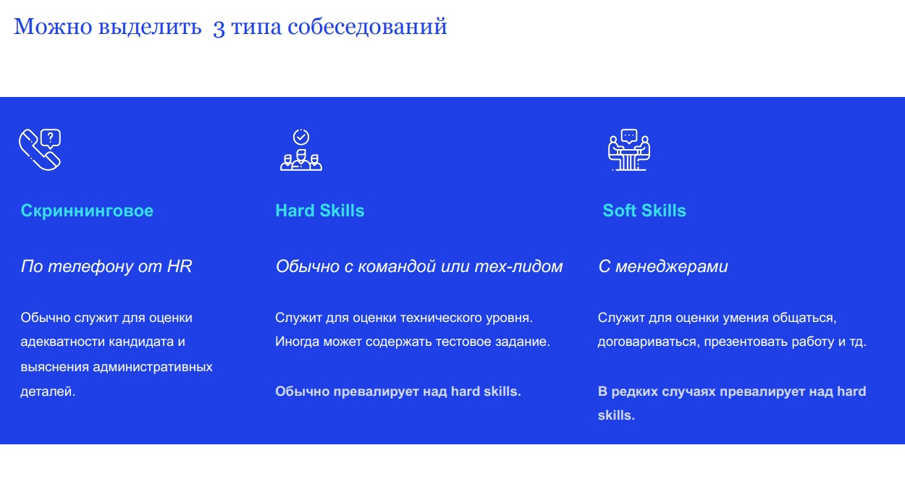
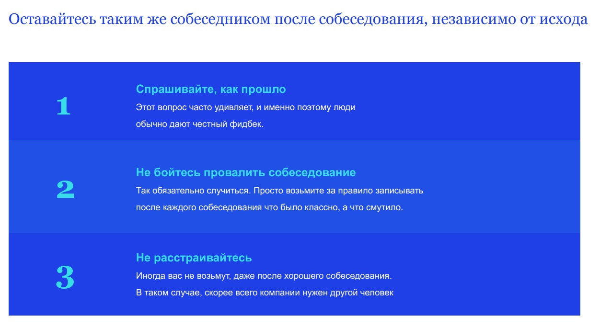
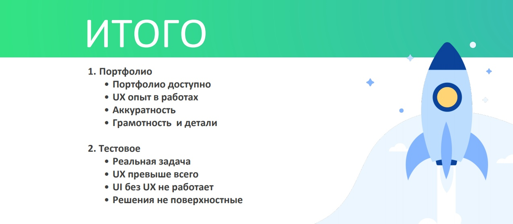
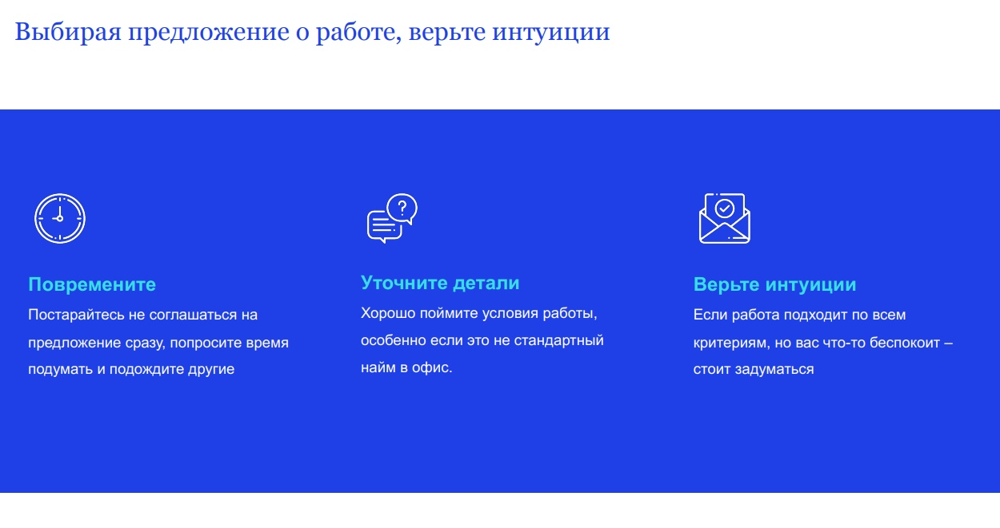

онлайн-конференция для тех, кто делает
удобные цифровые продукты

Войти
Как начинающему UX/UI – дизайнеру найти работу. Часть 2
В
первой части нашей статьи
мы поделились рекомендациями спикеров
онлайн-конференции UX-Марафон,
с чего начинать поиск работы после курсов по веб-дизайну.
Опираясь на доклад Pauline Bertry (Experience Designer, Digital McKinsey) «Как найти классную работу. Чему я научилась во Франции» мы показали, как проанализировать собственные навыки и потребности, а также запросы работодателей, чтобы из множества вакансий отобрать наиболее подходящие для себя. Кроме того, мы разобрались, как оформить резюме, портфолио и профессиональный профиль в социальных сетях, чтобы произвести благоприятное впечатление на эйчаров и рекрутёров. Пора двигаться дальше.
Pauline Bertry выделяет три типа собеседования. Первый тип – это скриннинговое собеседование. Оно проводится по телефону или по видеосвязи с эйчаром/рекрутёром. Единственное, для чего служит это интервью (за исключением очень редких случаев) – оценка степени адекватности кандидата и выяснение ряда организационных моментов: ваше место проживания, вопросы зарплаты и документов.
Если вы пройдёте на следующий уровень этой игры, вас ждёт более детальное собеседование с менеджерами для определения вашей способности к взаимодействию, умения договариваться презентовать работу и т.д. (soft skills) и собеседование для оценки вашего технического уровня (hard skills). В разных компаниях они могут идти в разной последовательности или даже объединяться.
В целом на каждом из этих типов собеседования задаются обычно три вида вопросов: «Вы до компании», технические и «Вы в компании». И если с техническими вопросами всё более-менее ясно, то первый и последний блоки вопросов есть смысл рассмотреть более подробно.
К первому блоку относятся такие вопросы, как «расскажите о себе», «расскажите о ситуации когда…» Частая ошибка при ответе на такие вопросы – начать пересказывать своё резюме. Человек, который проводит собеседование, хочет услышать не перечень фактов, а историю о вас, чтобы понять, как вы оказались там, где вы есть.
Блок вопросов о вас в компании – это «кем вы видите себя через Х лет», «в чём ваши сильные и слабые стороны», «что вы будете делать в первый месяц в компании», «как выглядит ваша идеальная работа» и тому подобные «горячо любимые» соискателями формулировки.
На самом деле, уверена Pauline Bertry, это очень важные вопросы, и чем более чётко вы представляете себе ответы на них – тем лучше для вас. Конечно, понимание, кем вы хотите быть через десять лет, не означает, что через десять лет именно так всё и будет. Жизнь вносит свои коррективы, но вы, по крайней мере, должны иметь вектор движения.
По большому счёту, вопросы этого блока нужны нанимателю, чтобы понять, чего от вас ждать и что вы можете принести в команду. Поэтому не стоит гуглить «правильные» ответы на вопросы в интернете – эйчары тоже умеют пользоваться поисковиками и не хуже вас знают, что в качестве своего недостатка рекомендуется указывать, к примеру, перфекционизм.
Совет: заранее составьте список возможных вопросов, обдумайте их и запишите ответы
Вносите в этот список все новые вопросы, с которыми приходится сталкиваться. Это поможет структурировать собственные мысли и более выгодно выглядеть на собеседовании. Если готового ответа у вас нет – не стесняйтесь попросить пару минут на обдумывание, прежде чем ответить.
Что ещё важно помнить на собеседовании?
Совет: выполняйте тестовое задание как реальный проект
Тестовое задание – это ваш шанс с максимальной выгодой продемонстрировать свои навыки, «продать себя», поэтому подойдите к его выполнению предельно ответственно. Худшее, что вы можете сделать – это набросать несколько картинок и связать их между собой. Не пожалейте времени на то, чтобы провести хотя бы минимальное исследование рынка, понять, для кого вы делаете этот продукт, какие у него цели; продумать тот путь, который поможет пользователю решить его проблему.
Если к выполненному тестовому заданию прилагается прототип и описание, как кандидат пришёл к тому или иному решению – это гарантированно поднимет ваши акции в глазах нанимателя.
Ошибки при выполнении тестового задания:
На первом месте при выполнении тестового задания должен быть UX, реальное решение и контент. Что касается визуального решения – достаточно сделать его аккуратно.
Конечно, бывает и так, что у вас просто нет выбора. Либо вам так нравится компания и вы так хотите в ней работать, что соглашаетесь сразу же, как только получаете офер. Но всё же хорошая практика, считает Pauline Bertry – немного повременить с решением. Дайте себе хотя бы день или два на то, чтобы «переварить» информацию. Нет ничего страшного в том, чтобы попросить у представителей компании немного времени, чтобы обдумать их предложение.
За время тайм-аута полезно будет также уточнить детали вашего будущего трудоустройства. Если вы что-то не проговорили, или у вас есть какие-то сомнения – позвоните и уточните.
Совет: доверяйте своей интуиции
Есть смысл выбрать компанию, в которой вы чувствуете себя комфортнее, даже если по формальным критериям другое предложение выглядит более привлекательным.
25 февраля 2021 на онлайн-конференции UX-Марафон #23 | Паттерны дизайн-менеджмента дизайн-директора будут рассказывать про найм, стажировки, развитие дизайнеров и работу в международных проектах. Подключайтесь и вливайтесь в профессиональное сообщество!
Спойлер: спикеры будут публиковать вакансии.
Опираясь на доклад Pauline Bertry (Experience Designer, Digital McKinsey) «Как найти классную работу. Чему я научилась во Франции» мы показали, как проанализировать собственные навыки и потребности, а также запросы работодателей, чтобы из множества вакансий отобрать наиболее подходящие для себя. Кроме того, мы разобрались, как оформить резюме, портфолио и профессиональный профиль в социальных сетях, чтобы произвести благоприятное впечатление на эйчаров и рекрутёров. Пора двигаться дальше.
Четвертый этап. Собеседование
Итак, вы отобрали подходящие для вас вакансии и откликнулись на них. Следующий этап – собеседование.Pauline Bertry выделяет три типа собеседования. Первый тип – это скриннинговое собеседование. Оно проводится по телефону или по видеосвязи с эйчаром/рекрутёром. Единственное, для чего служит это интервью (за исключением очень редких случаев) – оценка степени адекватности кандидата и выяснение ряда организационных моментов: ваше место проживания, вопросы зарплаты и документов.

Если вы пройдёте на следующий уровень этой игры, вас ждёт более детальное собеседование с менеджерами для определения вашей способности к взаимодействию, умения договариваться презентовать работу и т.д. (soft skills) и собеседование для оценки вашего технического уровня (hard skills). В разных компаниях они могут идти в разной последовательности или даже объединяться.
В целом на каждом из этих типов собеседования задаются обычно три вида вопросов: «Вы до компании», технические и «Вы в компании». И если с техническими вопросами всё более-менее ясно, то первый и последний блоки вопросов есть смысл рассмотреть более подробно.
К первому блоку относятся такие вопросы, как «расскажите о себе», «расскажите о ситуации когда…» Частая ошибка при ответе на такие вопросы – начать пересказывать своё резюме. Человек, который проводит собеседование, хочет услышать не перечень фактов, а историю о вас, чтобы понять, как вы оказались там, где вы есть.
Блок вопросов о вас в компании – это «кем вы видите себя через Х лет», «в чём ваши сильные и слабые стороны», «что вы будете делать в первый месяц в компании», «как выглядит ваша идеальная работа» и тому подобные «горячо любимые» соискателями формулировки.
На самом деле, уверена Pauline Bertry, это очень важные вопросы, и чем более чётко вы представляете себе ответы на них – тем лучше для вас. Конечно, понимание, кем вы хотите быть через десять лет, не означает, что через десять лет именно так всё и будет. Жизнь вносит свои коррективы, но вы, по крайней мере, должны иметь вектор движения.
По большому счёту, вопросы этого блока нужны нанимателю, чтобы понять, чего от вас ждать и что вы можете принести в команду. Поэтому не стоит гуглить «правильные» ответы на вопросы в интернете – эйчары тоже умеют пользоваться поисковиками и не хуже вас знают, что в качестве своего недостатка рекомендуется указывать, к примеру, перфекционизм.
Совет: заранее составьте список возможных вопросов, обдумайте их и запишите ответы
Вносите в этот список все новые вопросы, с которыми приходится сталкиваться. Это поможет структурировать собственные мысли и более выгодно выглядеть на собеседовании. Если готового ответа у вас нет – не стесняйтесь попросить пару минут на обдумывание, прежде чем ответить.
Что ещё важно помнить на собеседовании?
- Будьте вежливы. Даже мега-крутой специалист рискует провалить собеседование, если покажет себя высокомерным неадекватом.
- Уважайте своё время и помните о своих условиях. Если вас что-то смущает – скажите об этом прямо.
- Не бойтесь спрашивать и уточнять. Лучше задать наивный вопрос, чем сделать ошибку, основанную на неверном предположении.

После собеседования:
- Оставайтесь приятным и адекватным собеседником вне зависимости от исхода.
- Поинтересуйтесь, как всё прошло – это хорошая возможность получить обратную связь.
- Запишите свои наблюдения: что было хорошо, что не очень, что можно в будущем сделать лучше и т.д.
- Не расстраивайтесь. Возможно, компании просто нужен человек с другим набором навыков.
Пятый этап. Тестовое задание
Следующим этапом после собеседования, как правило, становится тестовое задание. По информации Ирины Жигаловой (руководитель направления, Сбербанк), на этом этапе отсеиваются порядка 50% кандидатов. В своём докладе «Какой дизайнер нужен современной компании» Ирина рассказала, как по каким критериям оценивается тестовое задание и как избежать ошибок при его выполнении.Совет: выполняйте тестовое задание как реальный проект
Тестовое задание – это ваш шанс с максимальной выгодой продемонстрировать свои навыки, «продать себя», поэтому подойдите к его выполнению предельно ответственно. Худшее, что вы можете сделать – это набросать несколько картинок и связать их между собой. Не пожалейте времени на то, чтобы провести хотя бы минимальное исследование рынка, понять, для кого вы делаете этот продукт, какие у него цели; продумать тот путь, который поможет пользователю решить его проблему.
Если к выполненному тестовому заданию прилагается прототип и описание, как кандидат пришёл к тому или иному решению – это гарантированно поднимет ваши акции в глазах нанимателя.
Ошибки при выполнении тестового задания:
- Пренебрежение контентом. Ряд плашек с «рыбой» или надписью «Название услуги» означает для руководителя, что и с реальными данными этот дизайнер, скорее всего, будет работать так же небрежно.
- Непродуманный UX. Симпатичная картинка, за которой не стоит никакого реального процесса, либо нестыковки со стороны UX при выполнении тестового задания – распространённая причина для отказа кандидату.
На первом месте при выполнении тестового задания должен быть UX, реальное решение и контент. Что касается визуального решения – достаточно сделать его аккуратно.

Шестой этап. Анализ предложений
Заключительный этап в процессе поиска работы, о котором, как правило, мало кто задумывается – анализ полученных предложений.Конечно, бывает и так, что у вас просто нет выбора. Либо вам так нравится компания и вы так хотите в ней работать, что соглашаетесь сразу же, как только получаете офер. Но всё же хорошая практика, считает Pauline Bertry – немного повременить с решением. Дайте себе хотя бы день или два на то, чтобы «переварить» информацию. Нет ничего страшного в том, чтобы попросить у представителей компании немного времени, чтобы обдумать их предложение.
За время тайм-аута полезно будет также уточнить детали вашего будущего трудоустройства. Если вы что-то не проговорили, или у вас есть какие-то сомнения – позвоните и уточните.
Совет: доверяйте своей интуиции
Есть смысл выбрать компанию, в которой вы чувствуете себя комфортнее, даже если по формальным критериям другое предложение выглядит более привлекательным.

Также рекомендуем:
- О нюансах технического собеседования и тестового задания – Марина Степанова (дизайн директор, Учи.ру) «Найм в дизайне».
- Об особенностях поиска работы и трудоустройства в Нидерландах – Юлия Малык (Digital Design Expert, ABN-AMRO) «Учеба, поиск работы и работа UX-дизайнером в Нидерландах».
25 февраля 2021 на онлайн-конференции UX-Марафон #23 | Паттерны дизайн-менеджмента дизайн-директора будут рассказывать про найм, стажировки, развитие дизайнеров и работу в международных проектах. Подключайтесь и вливайтесь в профессиональное сообщество!
Спойлер: спикеры будут публиковать вакансии.